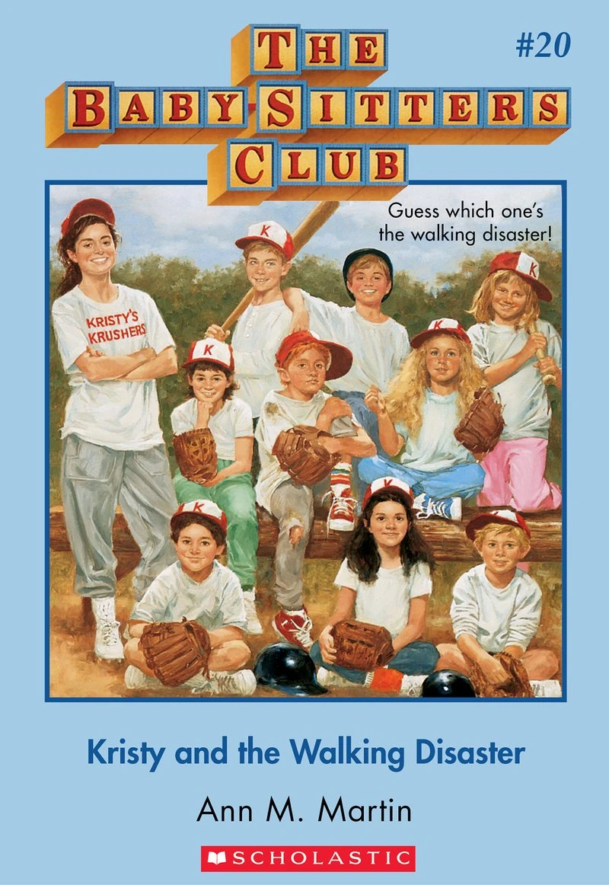

About Kristy
Kristy has brown eyes and long straight brown hair. Kristy is left-handed. Kristy is described as talkative (Kristy's Great Idea), bossy (Hello, Mallory), and an extrovert (Dawn's Wicked Stepsister). Kristy is known for her leadership skills and great ideas, which include The Record Book, The Notebook, and Kid Kits (along with others).
Kristy and the Walking Disaster
Kristy's Characteristics
- Bossy
- Confident
- Organized